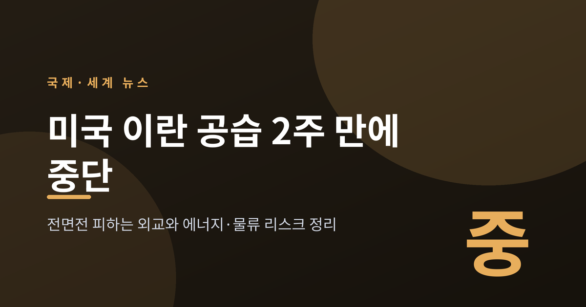
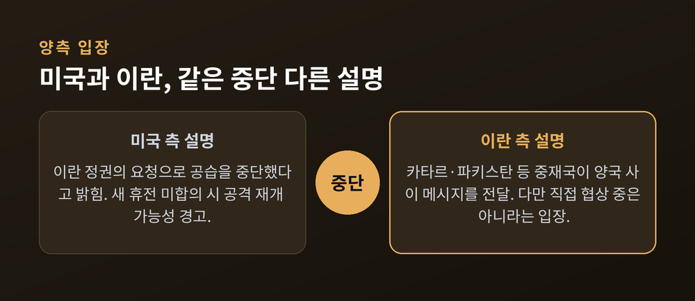
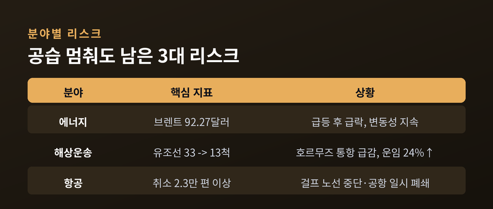
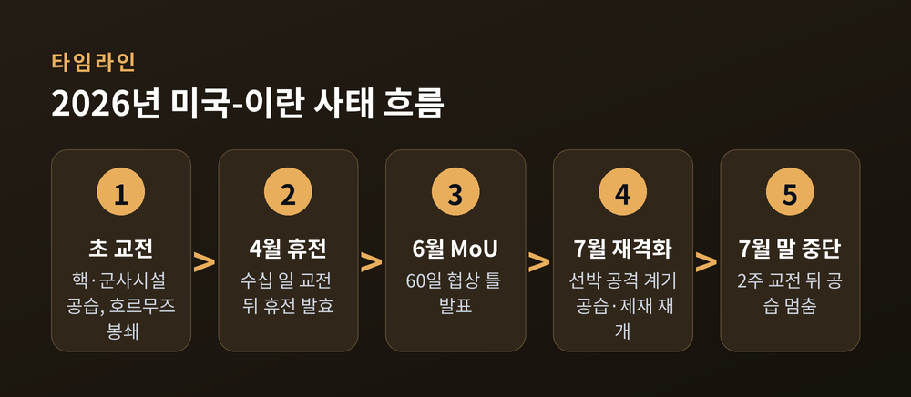
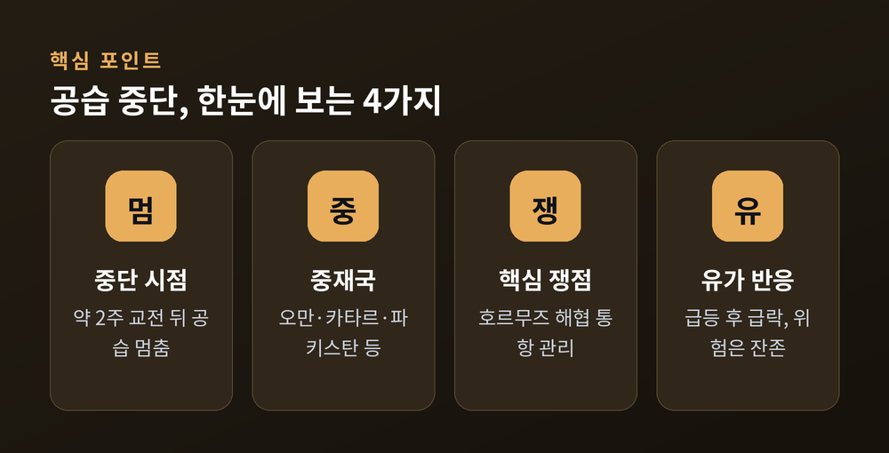
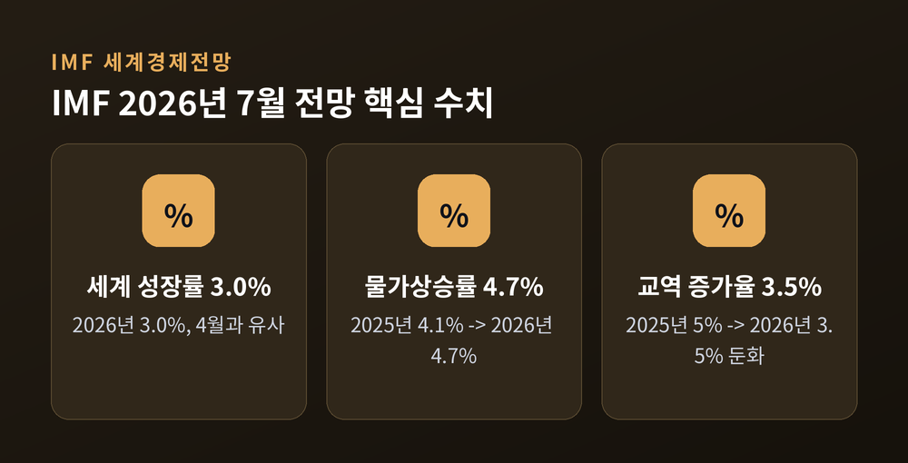

세 줄 요약
이번 글에서는 미국 이란 공습 중단이 무슨 일이었는지, 왜 중요한지, 그 배경과 쟁점은 무엇인지, 그리고 앞으로의 전망을 차분히 정리해 보겠습니다.
2026년 7월 하순, 미국이 약 2주간 이어온 이란 공습을 중단했습니다.
이 공습은 파키스탄이 중재했던 휴전이 무너진 뒤 재개된 것이었습니다. 호르무즈 해협 일대까지 번졌던 교전이 며칠 사이 멈춘 셈입니다.
중단은 하루로 그치지 않았습니다. 7월 26일에는 이틀 연속 공습이 멈췄고, 27일에도 그 상태가 유지됐습니다. 미국이 공격을 멈추자, 역내 미군 자산과 인프라를 겨냥하던 이란의 보복 공격도 함께 잦아들었습니다.
여기서 한 가지 짚어둘 점이 있습니다. 이 '중단'은 공식 종전이나 확정된 휴전 합의가 아니라는 것입니다. 양측이 잠시 방아쇠에서 손을 뗀, 조심스러운 멈춤에 가깝습니다.
같은 사건을 두고도 두 나라의 설명은 결이 다릅니다.
미국 측에서 트럼프 대통령은 "이란 정권의 요청으로" 공습을 멈췄다고 밝혔습니다. 동시에 새 휴전 합의가 이뤄지지 않으면 공격을 재개할 수 있다는 경고도 덧붙였습니다.
이란 측 설명은 조금 다릅니다. 이란 외무부 대변인 에스마일 바가에이는 카타르·파키스탄 같은 중재국이 양국 사이에서 메시지를 주고받고 있다고 전했습니다. 다만 이란은 "현재 미국과 직접 협상 중은 아니다"라는 취지로도 언급해, 접촉의 성격을 두고는 온도차가 감지됩니다.
중단의 배경에는 군사적 계산도 있었던 것으로 보입니다. 뉴욕타임스는 트럼프가 확전 계획을 멈춘 이유로 중동에 배치된 미사일 요격탄과 방공 탄약 재고가 줄어드는 데 대한 우려를 지목했다고 전했습니다.
어느 한쪽 말만으로 전모를 단정하기는 이릅니다. 확인된 사실은 하나입니다. 지금은 총성이 멎어 있다는 것입니다.

공습이 멈췄다는 소식은 반가운 신호입니다. 그러나 멈춤과 안정은 다릅니다.
가장 먼저 반응한 곳은 원유 시장이었습니다. 공습 중단 소식에 국제 유가는 빠르게 내렸습니다. 9월 인도분 브렌트유는 4.66% 내린 배럴당 92.27달러, 미국 WTI는 5.02% 내린 84.83달러를 기록했습니다.
불과 며칠 전과 비교하면 낙차가 큽니다. 지난주 브렌트유는 한때 배럴당 102달러까지 치솟았습니다. 7월 초보다 약 30달러나 높은 수준이었습니다. 낙폭을 두고 매체별로 4%대에서 7%대까지 다르게 전한 만큼, 특정 숫자 하나에 지나치게 무게를 두기보다 '급등했다가 급락한 변동성' 자체에 주목하는 편이 정확합니다.
문제는 유가가 내렸다고 위험까지 사라진 것은 아니라는 점입니다. 실물이 오가는 바닷길과 하늘길에는 여전히 부담이 남아 있습니다.
이번 사태의 핵심 리스크는 세 갈래로 정리됩니다. 에너지, 해상 운송, 그리고 항공입니다.
먼저 해상 운송입니다. 호르무즈 해협은 전 세계 원유·가스 공급의 약 20%가 지나는 요충지입니다. 교전이 격화됐을 때 이 길이 눈에 띄게 좁아졌습니다. 어느 수요일 하루 해협을 통과한 유조선은 13척으로, 직전 주 하루 평균 33척에서 크게 줄었습니다. 걸프에서 중국으로 가는 초대형 원유운반선(VLCC) 운임은 하루 만에 24% 뛰어 배럴당 1.67달러를 기록했습니다. 6월 중순부터는 이란 반다르아바스 항 인근에서 GPS를 교란하는 전자 방해가 선박 항법을 어지럽혀 왔습니다.
다음은 항공입니다. 7월 7일 교전이 재개된 뒤 걸프 하늘길도 흔들렸습니다. 에미레이트항공은 두바이-쿠웨이트 노선 8편을 취소했고, 에티하드·에어아라비아·플라이두바이도 일부 노선을 멈췄습니다. 쿠웨이트 국제공항은 미사일·드론 위협 속에 이착륙을 일시 중단하기도 했습니다. KLM은 리야드·담맘·두바이 노선을 8월 23일까지, 싱가포르항공은 두바이 노선을 10월 24일까지 중단 연장했습니다. 업계에서는 중동행 항공편 취소가 2만3천 편을 넘었다는 집계도 나왔습니다.
공습은 멈췄지만, 이렇게 재조정된 운송·운항 계획은 하루아침에 원상복구되지 않습니다. 예전엔 당연하던 항로가, 지금은 우회와 할증을 감수해야 하는 길이 됐습니다.

지금의 멈춤을 이해하려면, 지난 몇 달의 흐름을 짧게 되짚을 필요가 있습니다.
2026년 초 미국은 이란의 핵·군사 시설을 겨냥한 대규모 작전에 나섰고, 이란은 역내 미군기지를 공격하고 호르무즈 해협을 봉쇄하며 맞섰습니다. 수십 일의 교전 끝에 4월 8일 휴전이 발효됐고, 4월 말에는 무기한으로 연장됐습니다.
6월에는 한 걸음 더 나아갔습니다. 미국과 이란은 핵프로그램과 역내 안보를 논의하는 60일 협상 틀을 담은 양해각서(MoU)를 발표했습니다. 협상 기간 중 핵활동을 늘리지 않고, 제재 완화와 동결 자산 문제를 다루며, 호르무즈의 상업 운송을 보호한다는 내용이 담긴 것으로 알려졌습니다.
그러나 7월 초 선박 공격을 계기로 상황이 다시 뒤집혔습니다. 미국은 새 공습에 나서며 이란산 원유 제재를 재부과했고, 이란은 인근국의 미군 목표를 공격하며 응수했습니다. 이번 7월 하순의 중단은 그 격화 국면 위에서 나온 두 번째 '숨 고르기'인 셈입니다.

핵심 쟁점은 결국 호르무즈 해협 통제권입니다. 논의되는 절충안은 이란이 선박의 통항을 관리하되, 선박에 대한 제약은 줄이는 방식으로 알려졌습니다. 중재는 오만이 주도하고 카타르·파키스탄·이집트가 함께하며, 미국 측에서는 스티브 위트코프와 재러드 쿠슈너가 관여하고 있습니다.
다만 워싱턴은 협상과 대비를 동시에 진행하고 있습니다. 제안을 검토하면서도, 협상이 깨질 경우에 대비해 전투기와 급유기를 역내에 증파했습니다. 이스라엘에는 외교 창구를 닫을 수 있는 행동을 자제하라고 요청했습니다. 대화의 문을 열어두되, 힘의 카드도 손에서 놓지 않는 균형입니다.

이 사태는 한 지역의 충돌로 그치지 않습니다.
IMF는 7월 8일 세계경제전망 업데이트에서 2026년 세계 성장률을 3.0%, 2027년을 3.4%로 제시했습니다. 4월 전망과 대체로 같은 수준입니다. IMF는 지금의 세계경제를 두 개의 상반된 힘이 끌어당기는 국면으로 봤습니다. 하나는 전쟁발 불확실성이고, 다른 하나는 인공지능(AI)이 이끄는 투자 붐입니다.
물가와 교역 전망은 나빠졌습니다. 세계 물가상승률은 2025년 4.1%에서 2026년 4.7%로 올라, 4월 전망보다 0.3%포인트 높아졌습니다. 세계 교역 증가율은 2025년 5%에서 2026년 3.5%로 뚜렷이 둔화할 것으로 봤습니다. IMF는 이번 중동 전쟁 격화가 기록상 최대 규모의 에너지 공급 충격을 촉발했다고 진단했습니다.
주목할 대목은 충격이 고르지 않다는 점입니다. 전쟁 충격은 에너지 수입국과 취약한 경제에 더 무겁게 얹힙니다. 반면 AI 수요는 기술 가치사슬에 편입된 나라를 끌어올립니다. 에너지를 대부분 수입에 기대는 나라일수록, 이번 국면을 남의 일로 보기 어려운 이유입니다.

정리하면 이렇습니다.
미국의 이란 공습 중단은 전면전으로 향하던 흐름을 일단 멈춰 세웠습니다. 유가는 내렸고, 외교의 창은 다시 열렸습니다. 그러나 호르무즈 통제권이라는 매듭은 아직 풀리지 않았고, 바닷길과 하늘길에 쌓인 리스크도 그대로 남아 있습니다. 어느 쪽도 승패를 확정하지 못한 채, 힘과 대화가 팽팽히 맞물려 있는 국면입니다.
그래서 지금 필요한 자세는 단순합니다.
"멈춤을 안정으로 착각하지 않는 것."
이 조심스러운 멈춤이 진짜 출구로 이어질지 물으신다면, 아직은 지켜봐야 한다고 답하겠습니다.